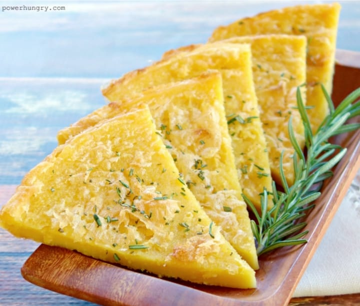

Socca, a gluten-free flatbread, also known as farinata and panisse is made throughout Western Europe as well as other places including Argentina and Algeria.
Socca is easy to make, only has three ingredients—chickpea flour, salt, and oil (water if you want to get technical) and requires no equipment just a bowl and a whisk.
In a medium mixing bowl, combine the chickpea flour, 2 tablespoons of olive oil, salt, and water. Whisk thoroughly until a smooth batter is formed. If it is thicker than pancake batter, add more water one tablespoon at a time, until pancake batter consistency is reached. When you pull the whisk out of the batter, it should leave a thick ribbon.
Let the batter rest for 30 minutes before cooking.
Heat a large nonstick or well-seasoned cast iron pan over medium-high heat. Drizzle pan with 1/2 tablespoon of olive oil.
Once hot, using a measuring cup or ladle pour half of the socca batter into the pan, while simultaneously turning the pan in a circular motion to help the batter spread evenly. Cook socca, until the top appears nearly set, about 2 minutes. Similar to pancakes, any bubbles that appeared should have set. There will be a visible firming on top at the edges, but no char spots on top. Flip socca with a large metal spatula and continue to cook, about another minute. It should have some brown spots on both sides. Remove from the pan. Add the remaining 1/2 tablespoon of olive oil to the pan and cook the rest of the socca batter.
Socca is ready to serve as soon as it comes out of the pan. Keep it whole and top with pizza toppings, slice into triangles and serve with dip, or cut in half and fill with sandwich fixings.